Brodeks

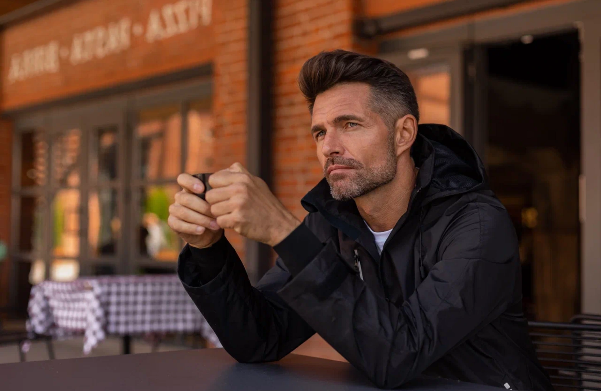
Кратко
Заказчик хотел выразить философию своей торговой марки в дизайне сайта, а так же создать удобную витрину для оптовой и розничной продажи своей продукции.
- Создать визуальное решение, которое покажет ценности бренда - бескомпромиссное качество и уважение к профессионалам своего дела.
- Дать маркетологам компании инструменты для рекламы новинок в ассортименте
- Повысить конверсию сайта за счет более удобной навигации и оформления заказа
- Интегрировать сайт с информационной системой компании
- рост трафика
- +100%
- рост конверсии
- +27%
- время на сайте
- +200%
Brodeks - это российский премиальный бренд спецодежды
Brodeks - бренд для людей, которые гордятся своей работой, спецодежда для профессионалов, которым важны удобство и внешний вид.
- Клиент:
- ООО "Эй Джи Технолоджиз"
- Бюджет:
- 2 500 000 р
- Сфера:
- Легкая промышленность
- Регион:
- Россия, Спб
- Сдано:
- июль 2024
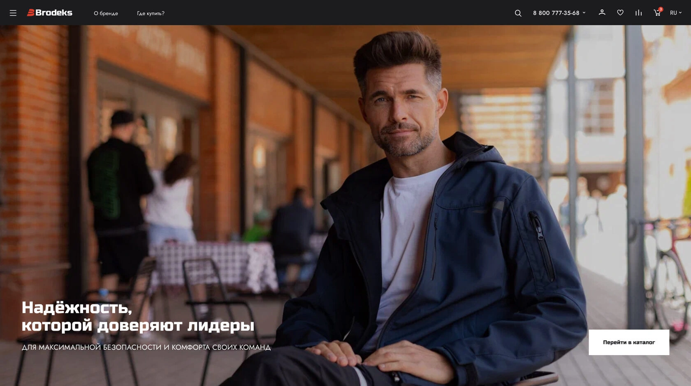
Начало проекта
Заказчик пришел к нам уже с определенным видением, которое было отражено в прототипах нового сайта.
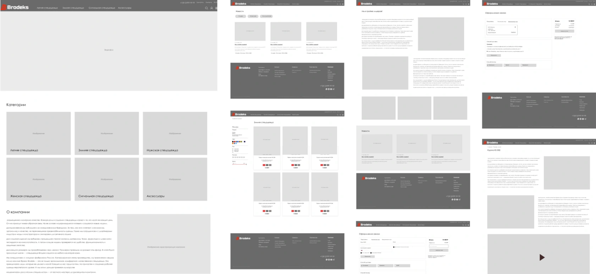
Ход работ
На старте проекта, в процессе обсуждения с Заказчиком, мы поняли: особенности бренда требуют особого подхода при создании дизайна сайта, основываясь на UX.
С одной стороны:
интерфейс сайта должен выглядеть
презентабельно и подчеркивать статус бренда.
С другой стороны:
он должен реализовывать удобство выбора одежды и учитывать особенности работы с сайтом разных целевых аудиторий (крупные и средние корпоративные заказчики; профессионалы, покупающие спецодежду для себя; физ.лица, которым интересна городская одежда этого бренда).
SEO-проектирование
При разработке сайта много внимания наша команда уделила SEO-требованиям.
SEO-специалистом был проведен анализ лидирующих участников рынка и выработаны подробные рекомендации по функционалу нового сайта.
Также SEO-специалисты сопровождали все этапы создания сайта:
- дизайн,
- верстку,
- программирование и наполнение
- переезд на новую версию сайта
На основании SEO-анализа мы предложили большое количество доработок в прототипы Заказчика. Потребовался ряд встреч нашей команды и представителей Заказчика, чтобы обосновать важность и нужность этих рекомендаций в будущем успехе проекта. Но в итоге, большая часть этих рекомендаций вошла в измененные прототипы.
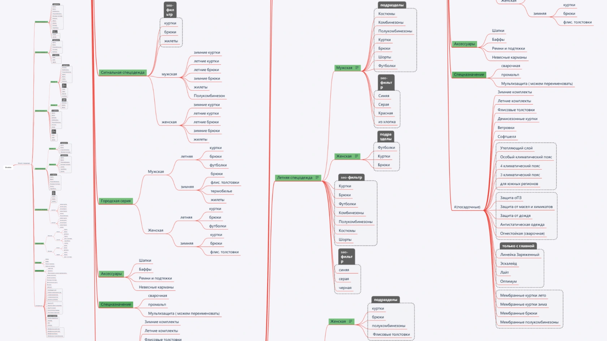
Доработка изначальной концепции
По итогу проведенного анализа потребностей целевой аудитории, пути клиента и SEO-проектирования мы вместе с клиентом внесли достаточно много изменений в первоначальные прототипы.
Разработка визуального решения
Мы пришли к выводу, что визуальная концепция нового сайта должна сочетать в себе два вида изображений:
- Крупные образы людей, профессионалов своего дела, носящих Brodeks
- Серии более мелких изображений, демонстрирующих детали одежды, её практичность и качество
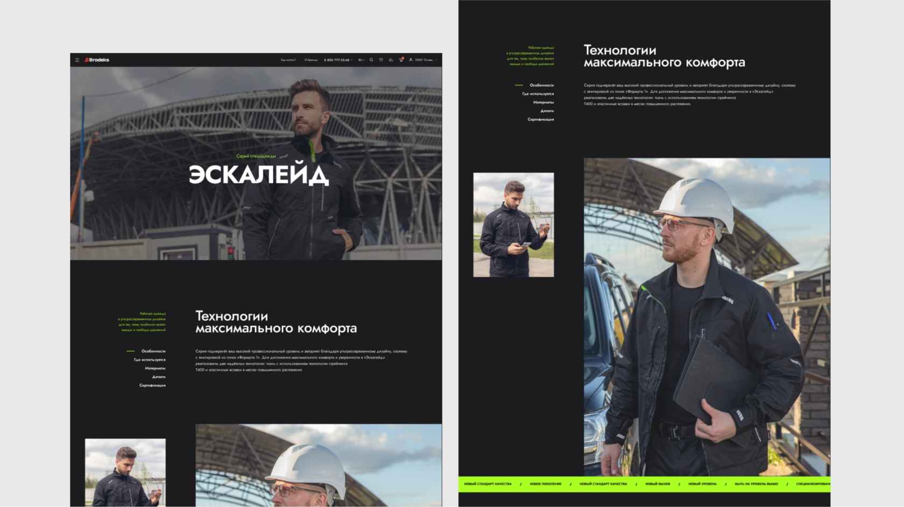
Узнаваемость образа
На сайте присутствует много крупных фотографий, через которые мы показываем образ потребителя бренда - сильного, уверенного в себе профессионала, который гордится своим делом и ценит качество и в работе и в одежде.
Мы создали отдельное Бренд-меню с сокращенной навигацией по сайту, предусмотрели крупные визуальные блоки на главной странице, а также раздел #ПрофиНосятBrodeks в корпоративном блоге
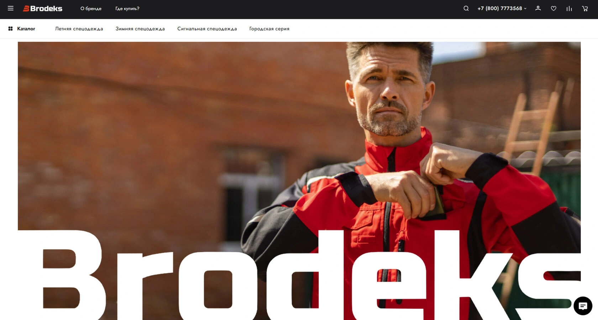
Внимание к деталям
Мы подчеркнули внимание, которое производитель уделяет удобству и качеству экипировки Brodeks, за счет следующих элементов:
- крупные изображения товара в категории
- описание особенностей товара (швы, молнии, застежки, структура материала) с иллюстрациями в карточке товара
- описание используемых решений на главной странице сайта
- анимированные фотографии в карточках категорий и карточках товаров
- крупные изображения товаров в карточках категорий
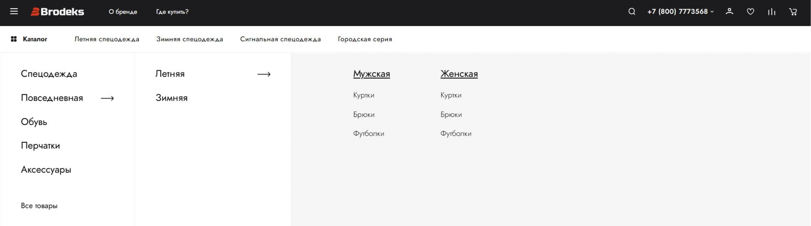
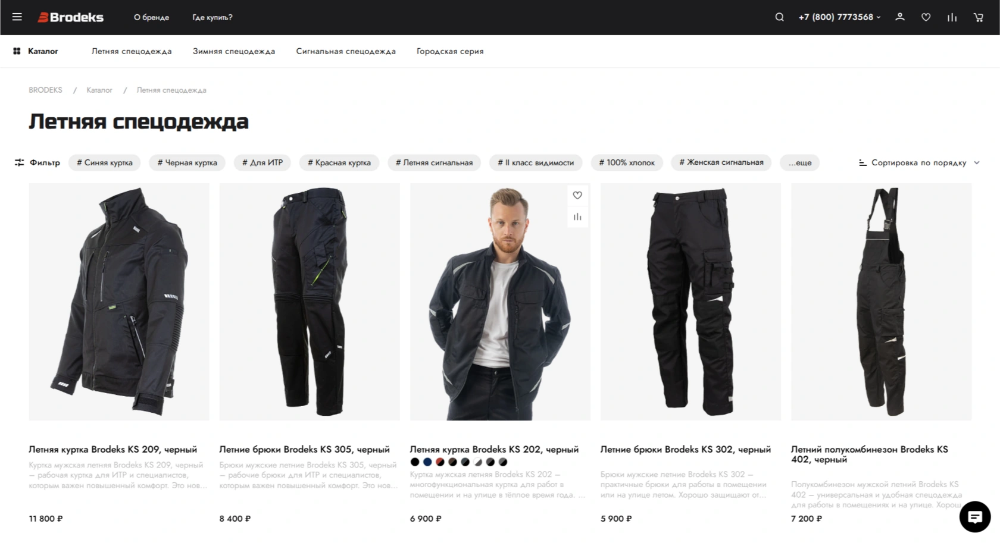
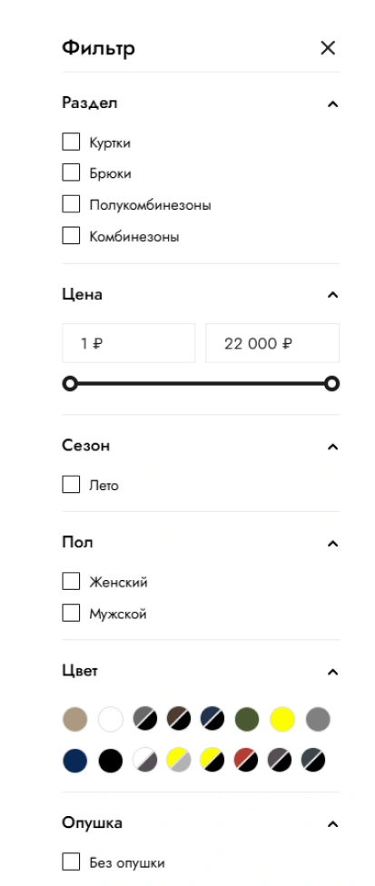
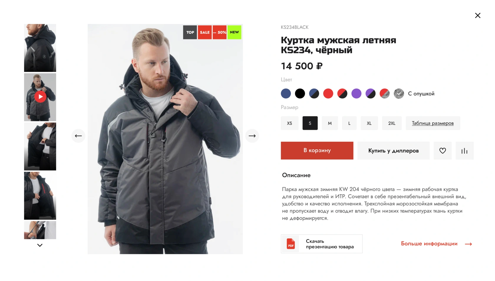
Путь клиента и Usability сайта
Brodeks.ru - не просто витрина бренда, это еще и интернет-магазин, поэтому при разработке мы учитывали карту пути клиента (CJM) для представителей разных целевых аудиторий - и закупщиков крупного бизнеса, и небольших корпоративных клиентов, и частных лиц, чтобы сделать процесс заказа максимально удобным.
- Продуманная под SEO структура каталога
- Фильтрация товаров в категории
- Возможность сравнения товаров и добавления в избранное
- Таблица размеров с инфографикой
- Разные способы заказа: в 1 клик и через корзину
- Сопутствующие и рекомендованные товары
- Личный кабинет покупателя
- Информация о дилерах и местах продаж
- Точки контакта для записи корпоративных клиентов на презентацию и т.д.

Клиент
Brodeks - бренд для людей, которые гордятся своей работой, спецодежда для профессионалов, которым важны удобство и внешний вид.
Перед нами стояли задачи
Заказчик хотел выразить философию своей торговой марки в дизайне сайта, а так же создать удобную витрину для оптовой и розничной продажи своей продукции.
- Создать визуальное решение, которое покажет ценности бренда - бескомпромиссное качество и уважение к профессионалам своего дела.
- Дать маркетологам компании инструменты для рекламы новинок в ассортименте
- Повысить конверсию сайта за счет более удобной навигации и оформления заказа
- Интегрировать сайт с информационной системой компании
Путь клиента и Usability сайта
Brodeks.ru - не просто витрина бренда, это еще и интернет-магазин, поэтому при разработке мы учитывали карту пути клиента (CJM) для представителей разных целевых аудиторий - и закупщиков крупного бизнеса, и небольших корпоративных клиентов, и частных лиц, чтобы сделать процесс заказа максимально удобным.
- Продуманная под SEO структура каталога
- Возможность сравнения товаров и добавления в избранное
- Разные способы заказа: в 1 клик и через корзину
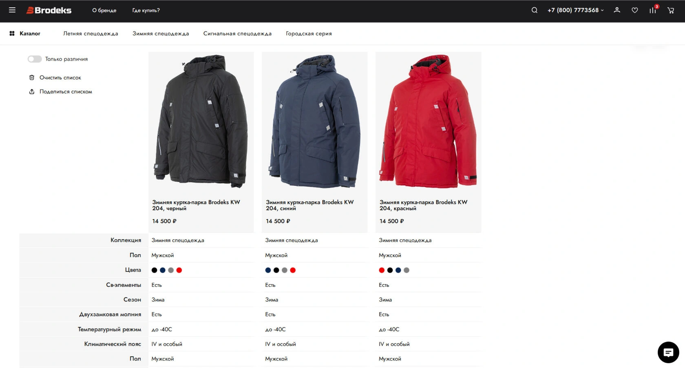
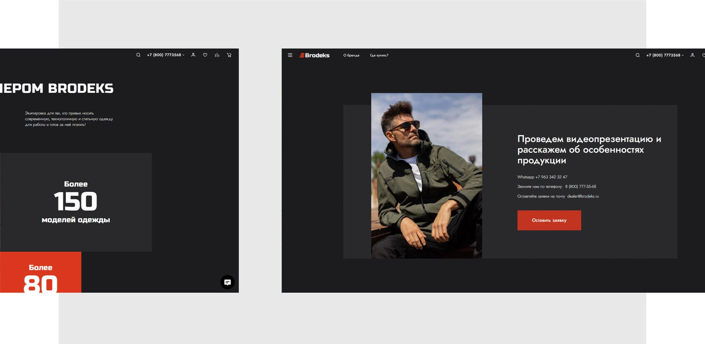
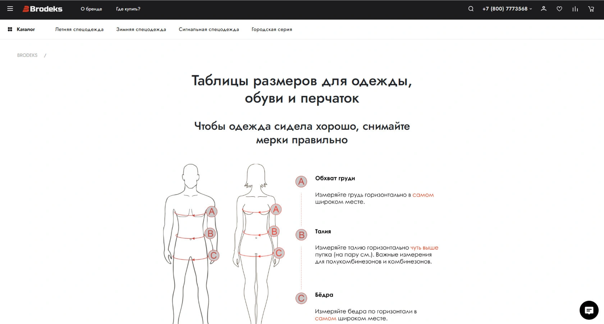
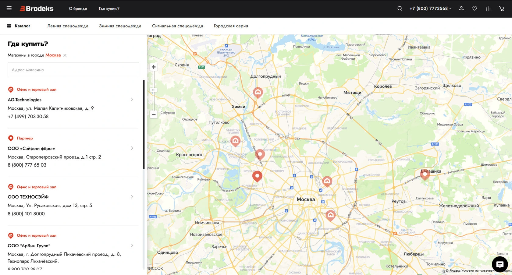
Программная реализация
Для удобства дальнейшего сопровождения проекта сайт был запрограммирован на 1С-Битрикс.
Эта CMS имеет весь необходимый и достаточный функционал для такого проекта. Также у клиента уже был опыт администрирования сайта на 1С-Битрикс.
Помимо этого сделан ряд интеграций: с "Мой Склад", CRM, службами доставки и платежными системами.
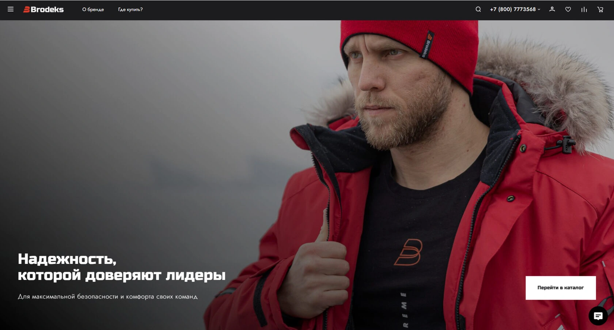
Мобильная версия
Основная целевая аудитория проекта - b2b-клиенты и поэтому приоритетной является версия сайта для ПК.
Но мы также дали возможность полнофункционального использования сайта и с мобильных устройств.


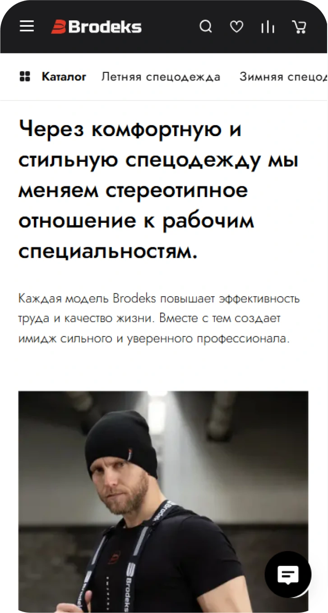
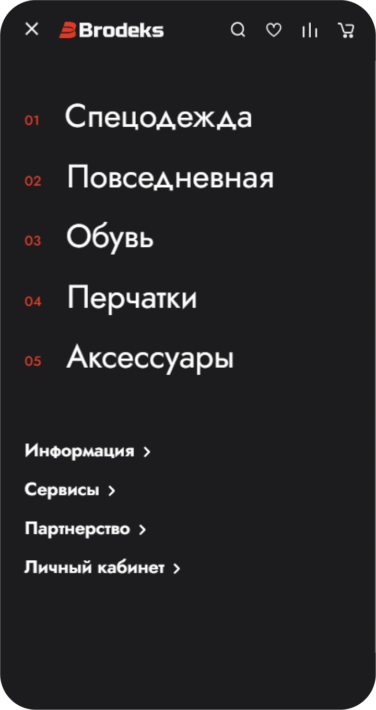
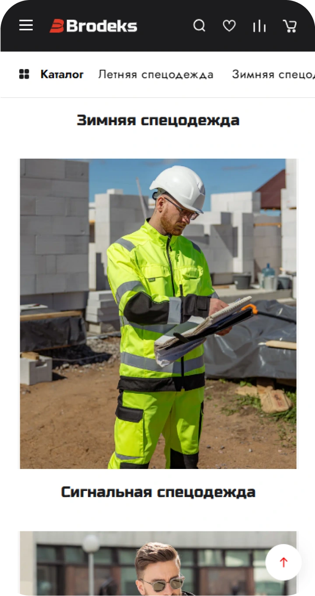
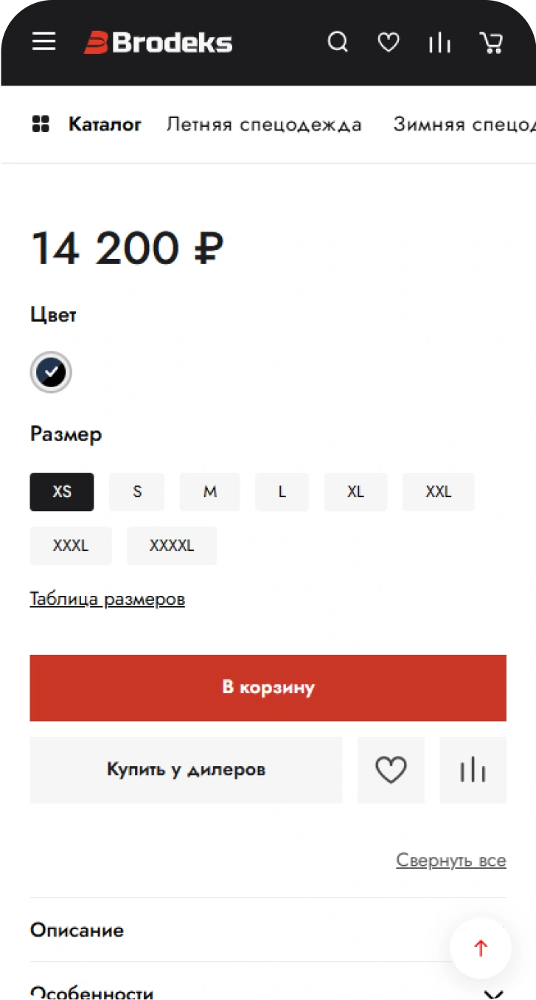
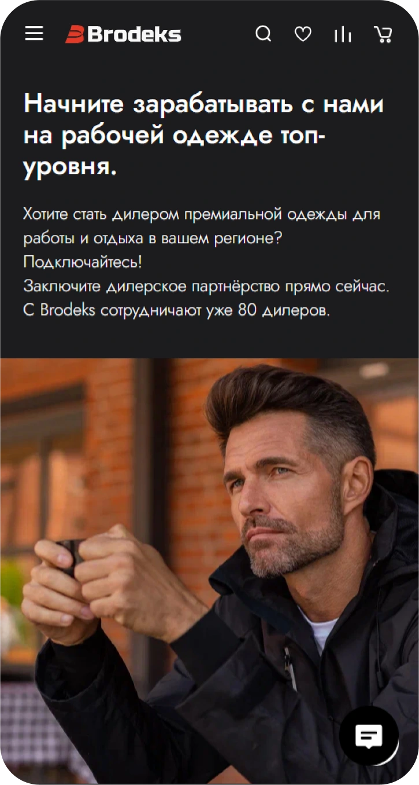
Результат
В итоге команда Brodeks получила свежее визуальное решение, которое помогает в продвижении их бренда.
Скорость загрузки сайта увеличилась на 35%.
Глубина просмотра выросла на 51%.
Время нахождения на сайте увеличилось на 18%.
Конверсия добавления товара в корзину увеличилась на 24%.
Наши достижения с кейсом Brodeks
Сайт стал финалистом конкурсов Workspace Digital Awards в номинации "Потребительские товары" и в Рейтинге Рунета-2024 в номинациях "Монобрендовые интернет-магазины" и "Одежда и обувь".
Десктоп и мобильная версия
Главная страница проекта.

Страницы сайта
Выберите страницу, чтобы посмотреть макет.
Сервисные страницы

Детали проекта


Хотите такой же проект?
Свяжитесь с нами и мы с радостью Вам поможем
Написать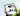